The game now opens on the stationary right-hand dribble, the most advanced trained skill. A panel on the left switches between the four dribble behaviours and the four humanoid skins, and shows live dribble numbers. The five-tier scoreboard and mode banner are hidden, not deleted: -StreetballClassicHUD brings them back.
dribble.onnx; the tier is capped so it never moves on to another skill.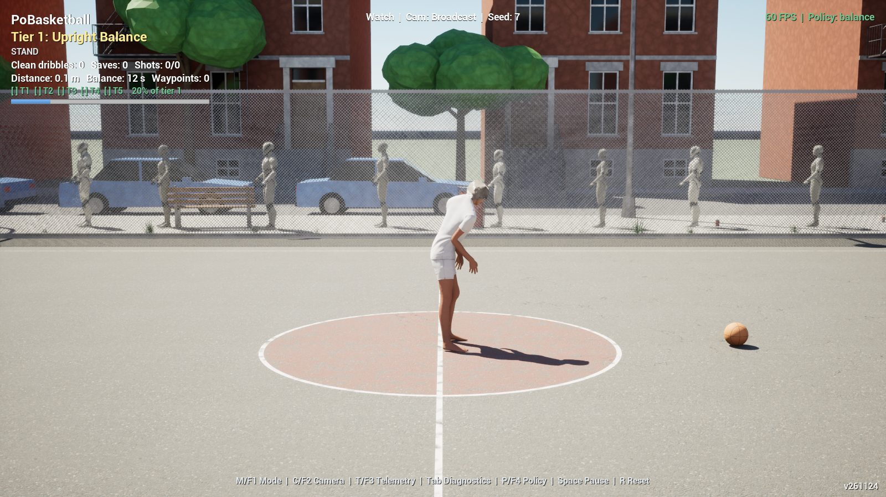
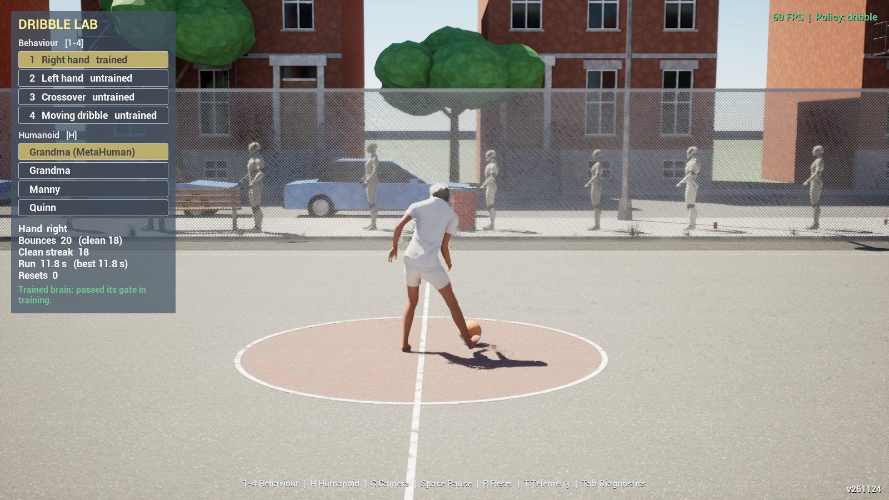
One look tells you which skill is running, whether its brain is trained, and how it is doing right now.
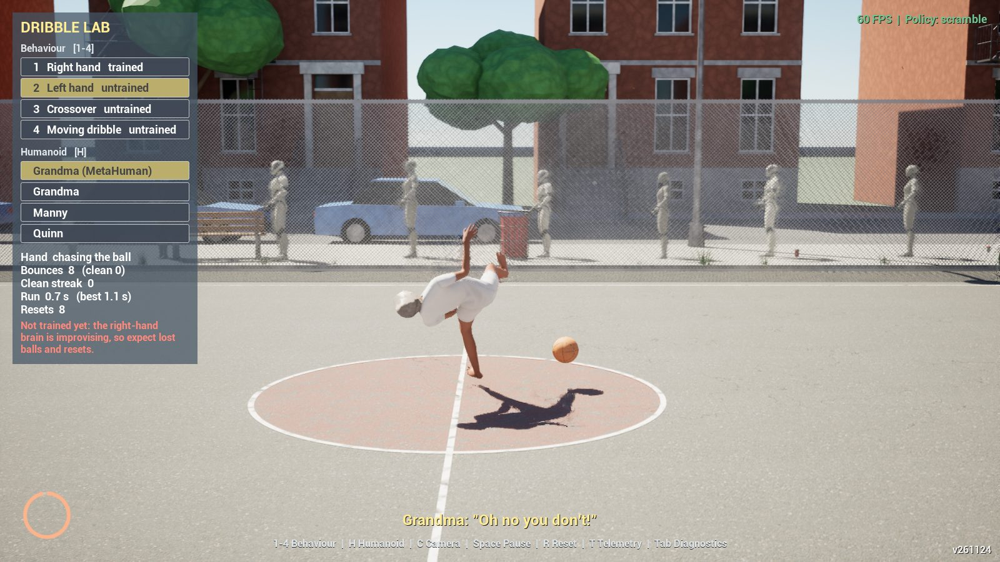
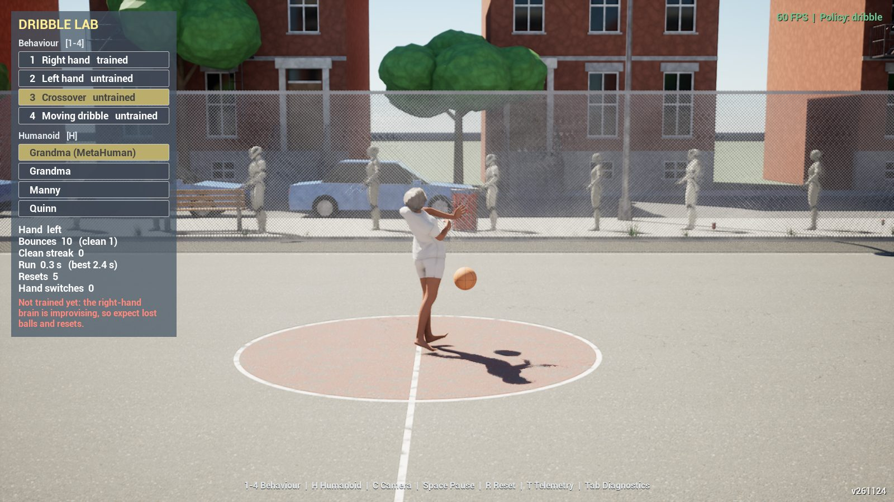
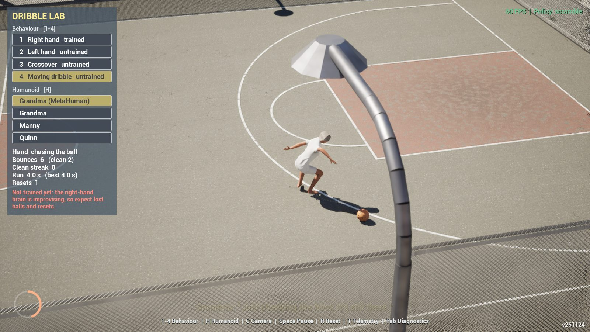
| Behaviour | Director setting | Gate | Resets / 60 s |
|---|---|---|---|
| 1 Right hand | tier 3, hand +1 | passed (dribble_anchor10, 100 %) | 0 |
| 2 Left hand | tier 3, hand −1 | 0 % | 67 |
| 3 Crossover | tier 3, table hand switches | 0 % | 34 |
| 4 Moving dribble | tier 4, hand +1 | 0 % | 26 |
Resets come from the playlist run before this change (60 s each, seed 7). The UI does not change the brains; it makes the gap visible.
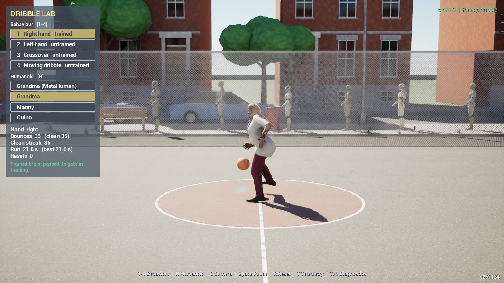
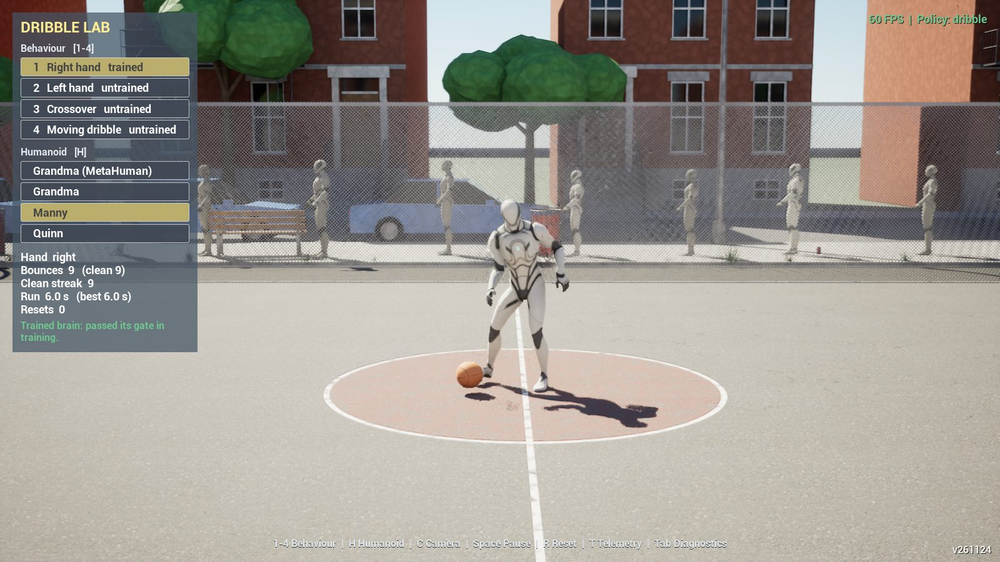
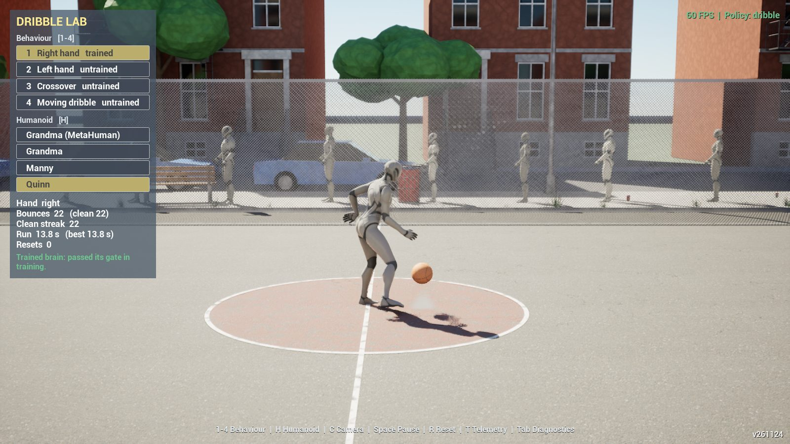
Switching skins mid-dribble keeps the run going: no reset, same sim time and joint positions (checked by Streetball.B10.DribbleLab).
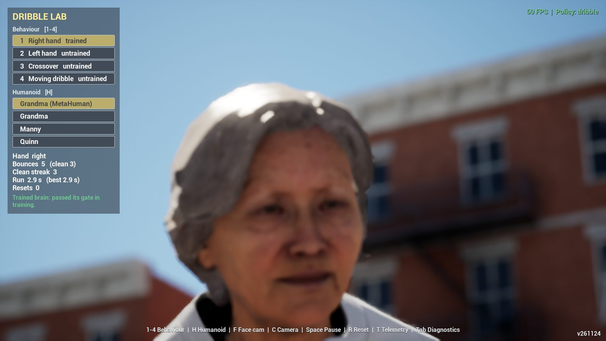
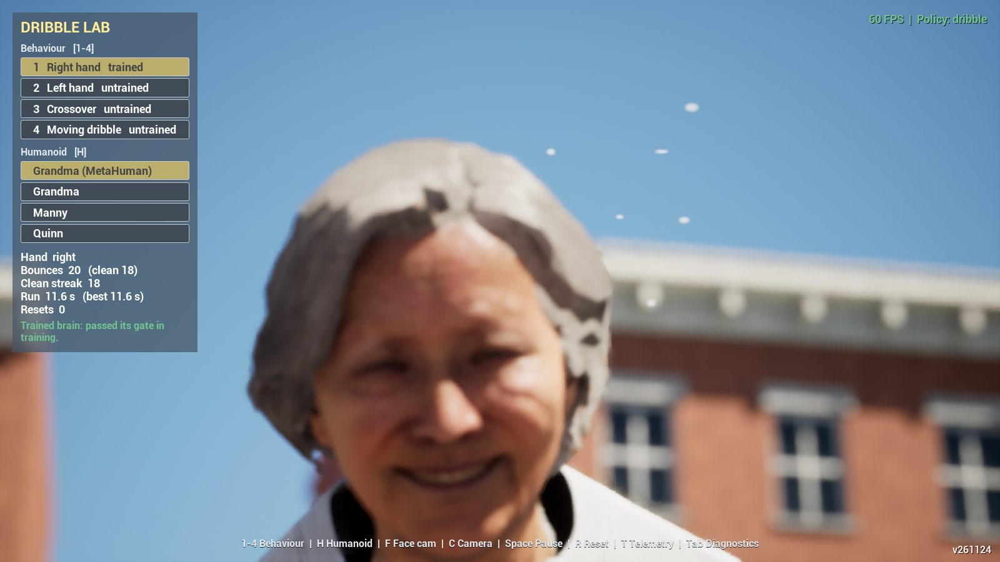
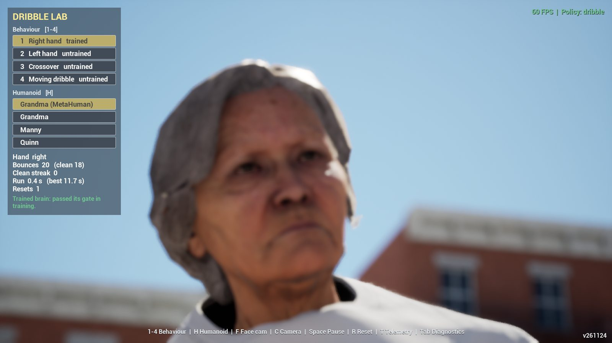
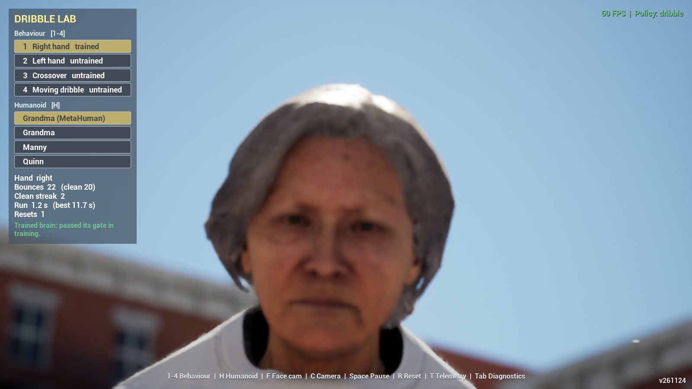
F (or the fifth C camera) frames her face from where it points, 25° below eye level so a bowed head still reads. The smile grows with each clean bounce in a row (full at 8); a lost ball or reset snaps to a scowl that fades over 2.5 s and holds while the ball is loose. MetaHuman: 133 face controls from Epic's ARKit mapping, driven through RigLogic.
The CC "Grandma" skin can't show it: her imported mesh has 0 morph targets although the FBX carries them, so her face (and the voice lip-sync and blinks) never moved. Needs a re-import with morph targets.
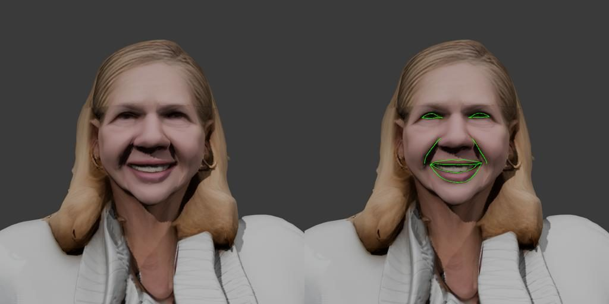
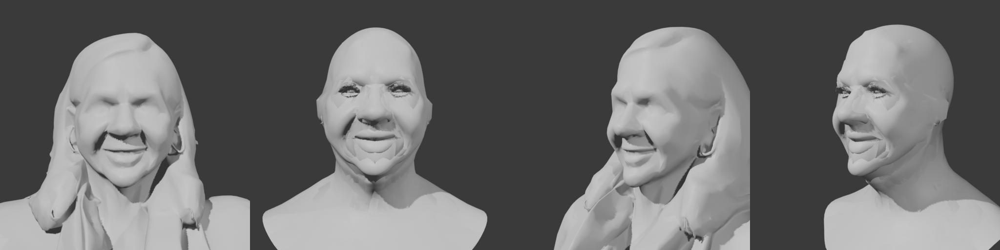
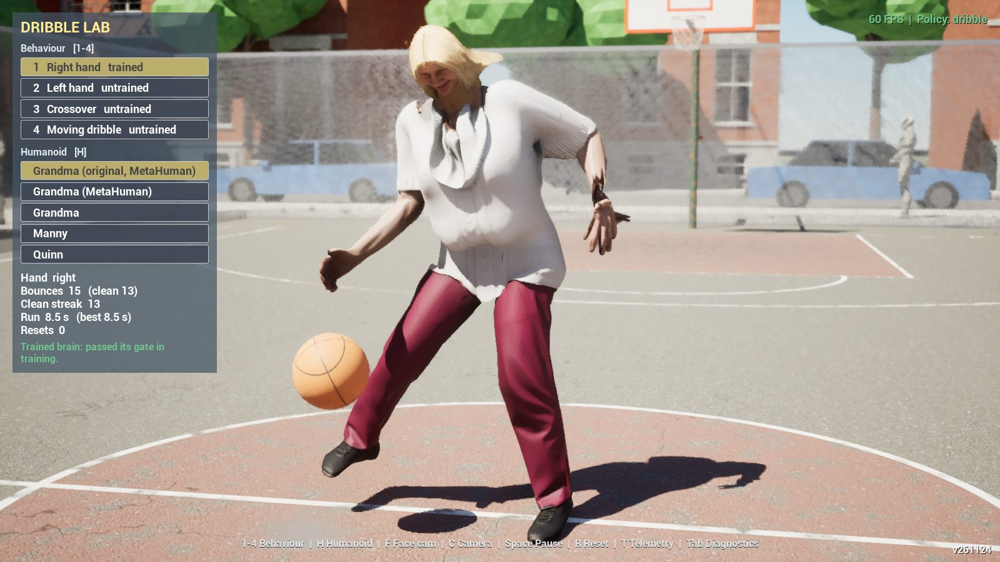
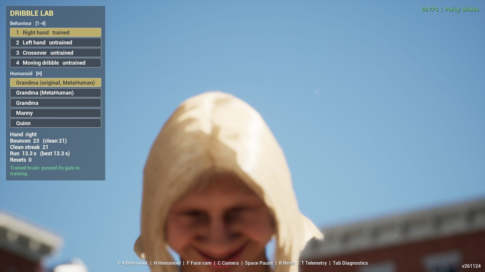
Mesh to MetaHuman, all headless: face skin picked by texture colour, conformed head-only to her mesh with tracked landmarks, cloud auto-rig, built, and put on her own headless body. She is the new default humanoid; the Grace MetaHuman stays as a second choice.
1-4 behaviour H next humanoid F face camera C camera Space pause R reset T telemetry Tab diagnostics mouse: click the panel buttons -StreetballClassicHUD old five-tier HUD and tier run -StreetballLabSteps=8:b2,14:h3 scripted switches (captures, tests)